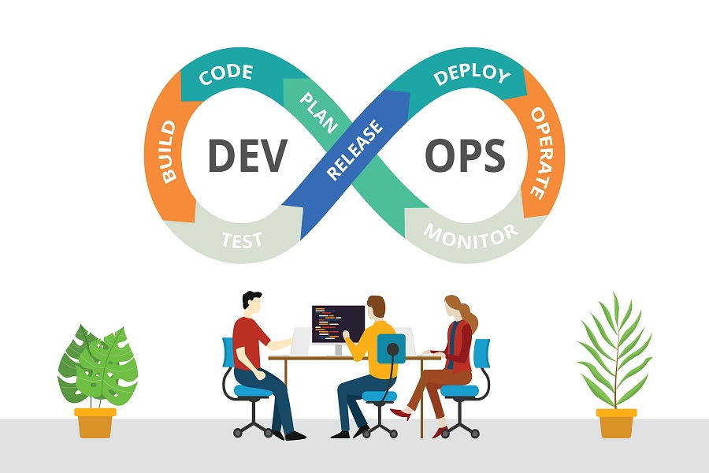

Un développeur Ops (plus communément appelé Ingénieur DevOps) est un professionnel de l'informatique qui possède la double compétence de développement logiciel (Dev) et de gestion des infrastructures/opérations (Ops).
